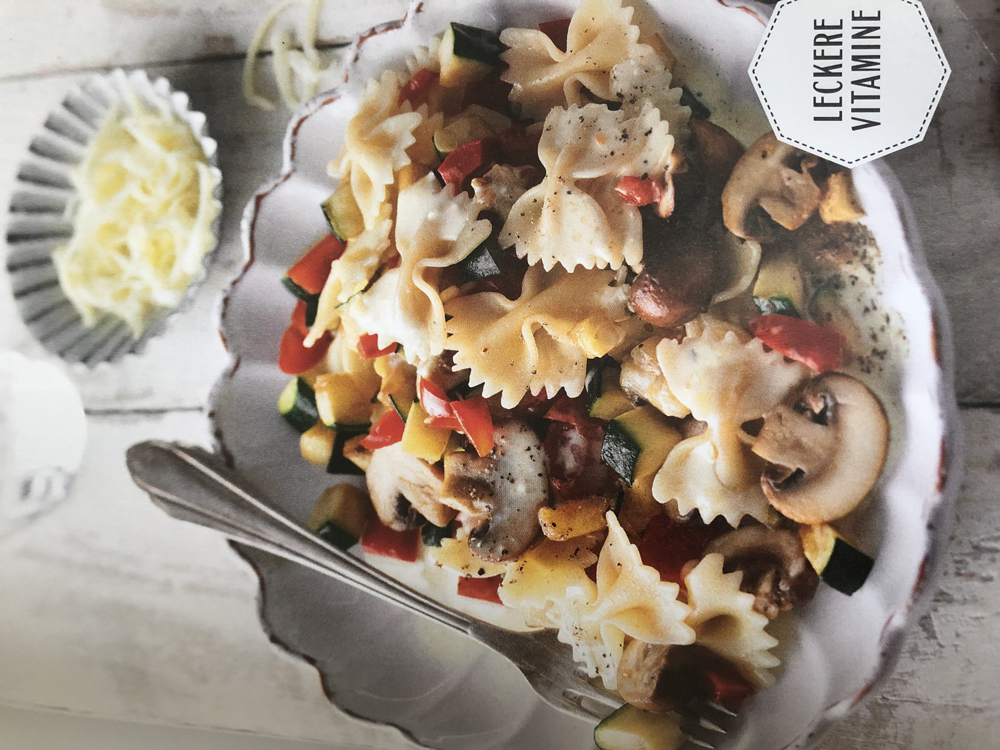

Farfalle mit Gemüse-Käse-Sauce

 30 Min.
30 Min.
 simpel
simpel
 25.07.2023
25.07.2023
| 200 g Farfalle |
| 1 Zwiebel(n) |
| 0.5 Paprika |
| 1 Zucchini |
| 1 EL Öl |
| 100 g Schmand |
| 2 EL Milch |
| 60 g Butterkäse |
| Pfeffer |
| Salz |
Zubereitung
ca. 30 Minuten
Gesamtzeit ca. 30 Minuten
- Die Nudeln in reichlich kochendem Salzwasser nach Packungsangabe bissfest kochen.
- Inzwischen die Ziebel schälen und würfeln. Paprika von weißen Trennwänden und Kernen befreien, waschen und in kleine Würfel schneiden. Champignons trocken abreiben, von trockenen Schnittstellen befreien und eventuell halbieren.
- Das Öl in einer Pfanne erhitzen und die Zwiebel darin glasig dünsten. Die Paprika- und Zucchiniwürfel sowie die Champignons zur Zwiebel in die Pfanne geben und alles ca. 4 Minuten bei niedrieger Hitze dünsten.
- Schmand und Milch zum Gemüse geben und gründlich unterrühren. Die Sauce nur kurz aufkochen lassen, anschließend mit Salz und Pfeffer würzen.
- Den Butterkäse grob reiben und unter die fertige Sauce ziehen. Die Farfalle in ein Sieb abgießen und abtropfen lassen. Die Nudeln mit der Sauce in der Pfanne mischen, nochmals mit Salz und Pfeffer abschmecken, anrichten und genießen!
Rezept erstellt von
 Marcel
Marcel